Soluções que movem seu negócio! Lubrificação de alta performance, químicos industriais e desenvolvimento sustentável.
Falar no WhatsAppA Bemhes Representação atua no segmento industrial e agrícola em Mandaguari-PR e região, oferecendo soluções em lubrificação de alta performance, proteção e manutenção de máquinas e equipamentos.
Nosso trabalho vai além da comercialização de produtos: buscamos entender a necessidade de cada operação e recomendar a solução mais adequada, contribuindo para aumentar a vida útil dos componentes, reduzir desgastes, falhas e paradas não programadas.
Trabalhamos com tecnologias de alto desempenho e excelente custo-benefício, buscando proporcionar maior proteção, eficiência operacional e redução dos custos de manutenção.
Nosso compromisso é transformar lubrificação em resultado: mais proteção para o seu equipamento, maior produtividade e economia para o seu negócio.
Bemhes Representação — Tecnologia em lubrificação, proteção e performance para o seu negócio.
Óleos e graxas de alta performance projetados para resistir a condições extremas de carga, temperatura e trabalho contínuo em frotas e indústrias.
Produtos especializados para manutenção, desengraxe, proteção anticorrosiva e otimização dos processos de produção fabril.
Tecnologias focadas na redução de resíduos, economia de insumos e eficiência energética para operações ambientalmente responsáveis.
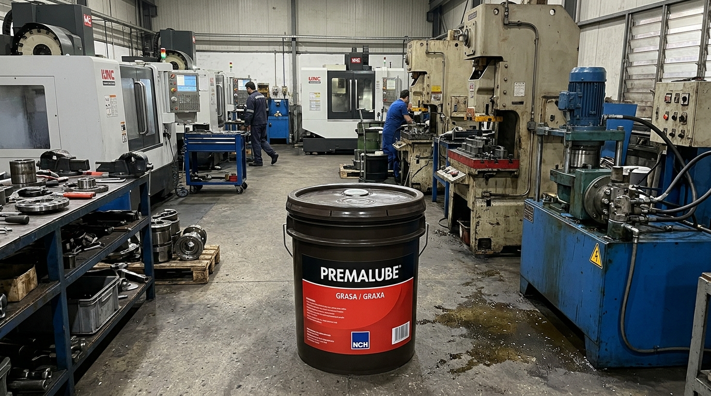
Graxa multipropósito de alta performance para cargas pesadas e extrema pressão. Formulação à base de complexo de alumínio.
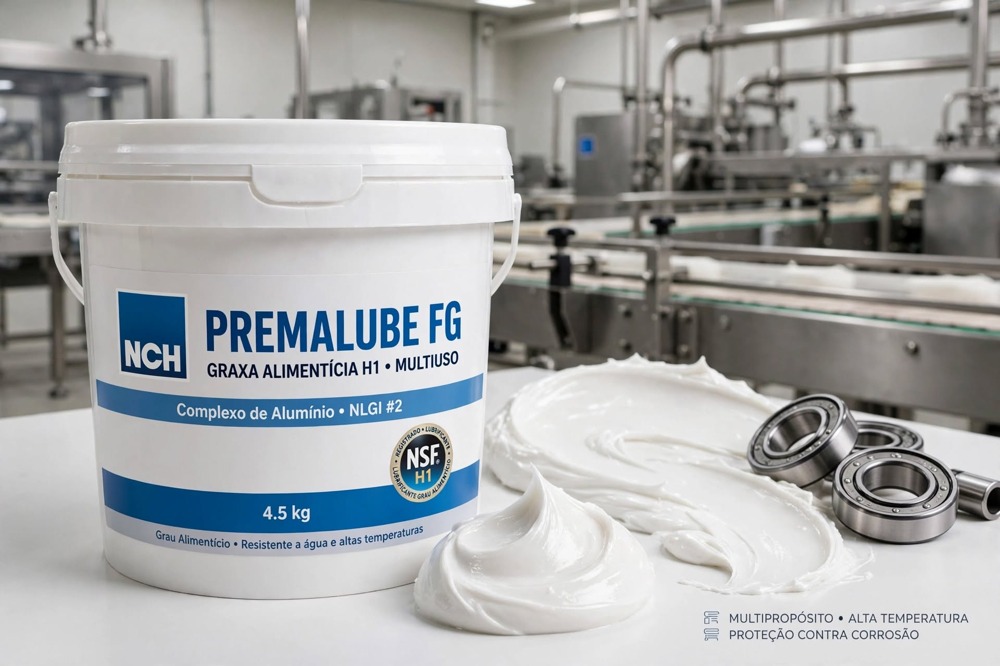
Graxa branca de grau alimentício H1 (NLGI #1 e #2) com espessante de complexo de alumínio para indústrias alimentícias e farmacêuticas.
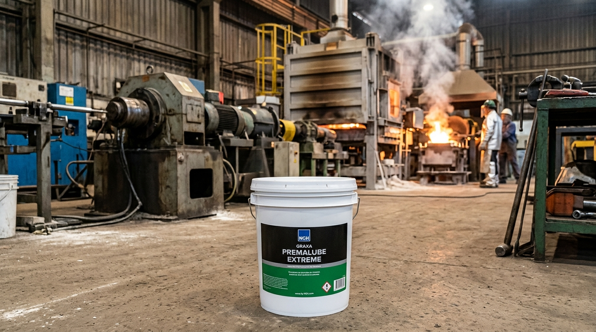
Graxa de alta performance para aplicações severas com tecnologia de sulfonato de cálcio, blend sintético e Nano-Guard™.
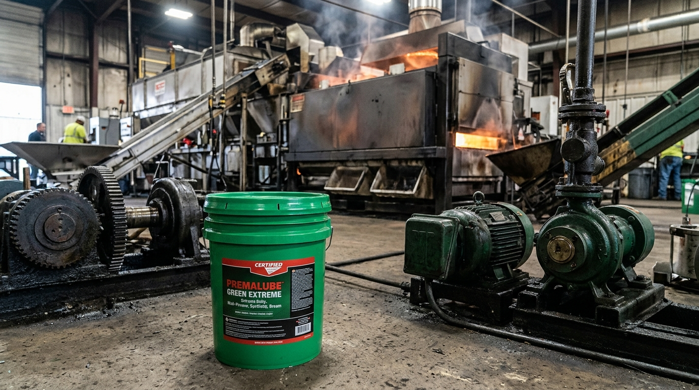
Graxa sulfonato de cálcio verde-azulada para ambientes extremos, alta velocidade (20.000 rpm) e resistência total à água salgada.
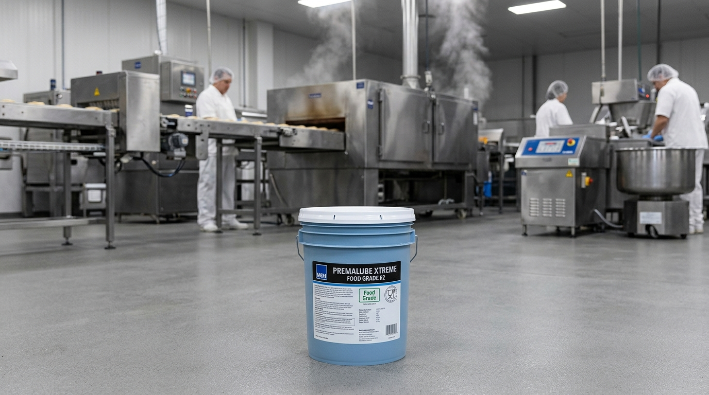
Graxa de grau alimentício H1 de sulfonato de cálcio para condições extremas, suportando cargas de solda de 800kg.
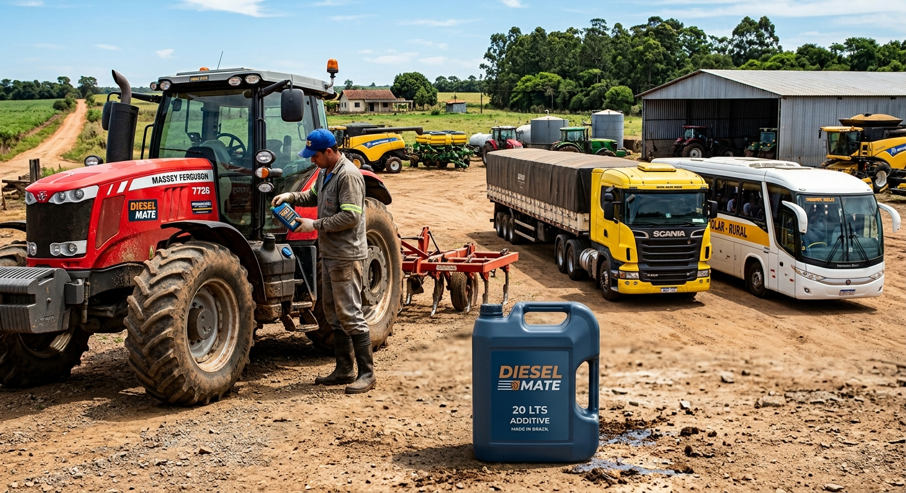
O Diesel Mate é um aditivo completo desenvolvido para otimizar o desempenho do diesel, eficiente em S10 e biodiesel.
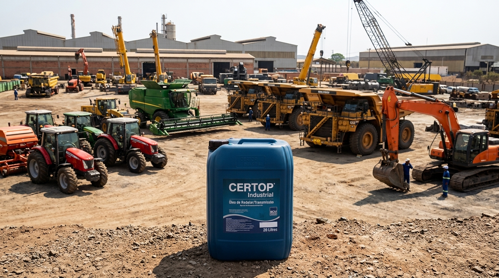
Óleos de alto desempenho para engrenagens e rolamentos formulados para resistir a condições severas em frotas e indústrias.
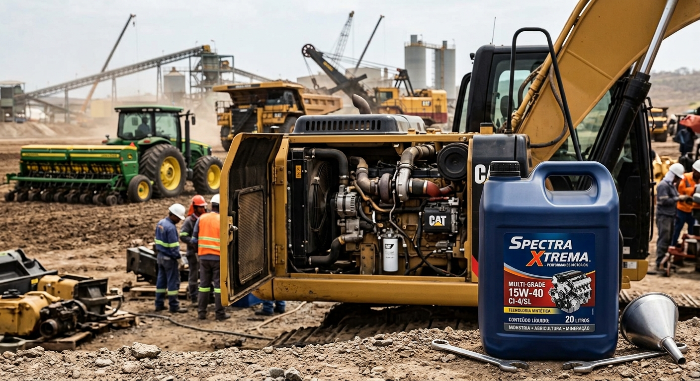
Óleo lubrificante de alto desempenho para motores diesel (SAE 15W40 / API CI-4) formulado com Molysol.
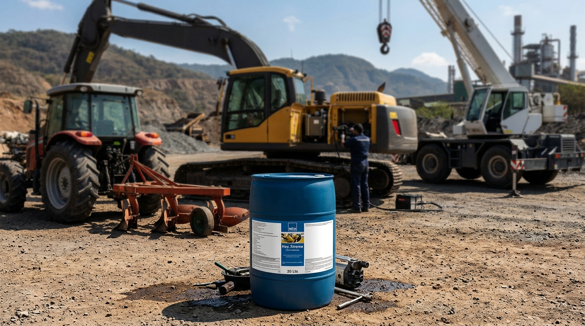
Óleo hidráulico monograu com Molysol para serviços pesados e extensão do intervalo de troca.
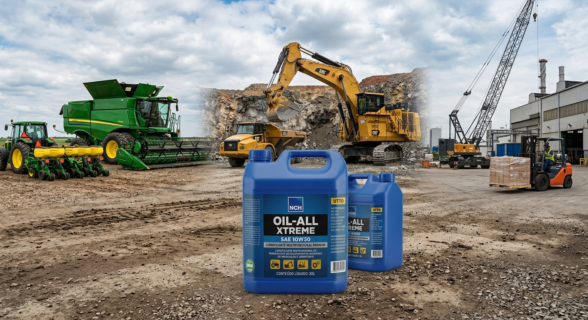
Fluido universal multifuncional com blend sintético para equipamentos agrícolas e de construção pesada.
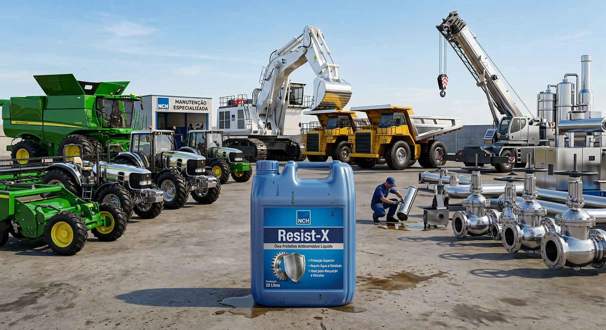
Protetivo anticorrosivo líquido que desloca umidade, lubrifica e forma uma película flexível contínua.
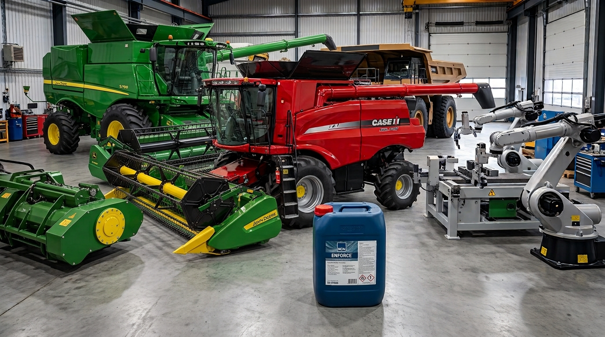
Limpador e desincrustante alcalino concentrado, biodegradável e não inflamável para remoção pesada.
Limpador desengraxante multipropósito espumante e penetrante, seguro para áreas alimentícias (NSF A1).
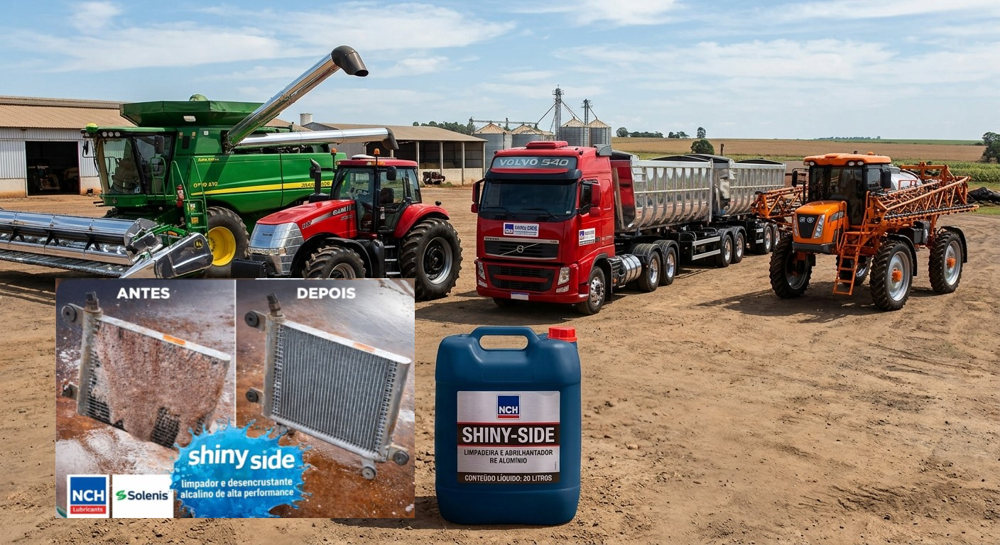
Limpador e abrilhantador alcalino para remoção de óxidos em serpentinas de ar condicionado e alumínio.
Atendimento para Mandaguari – PR e Região
WhatsApp: (43) 98842-8240
E-mail: bemhesrepresentacao@gmail.com
Localização: Mandaguari – PR e região